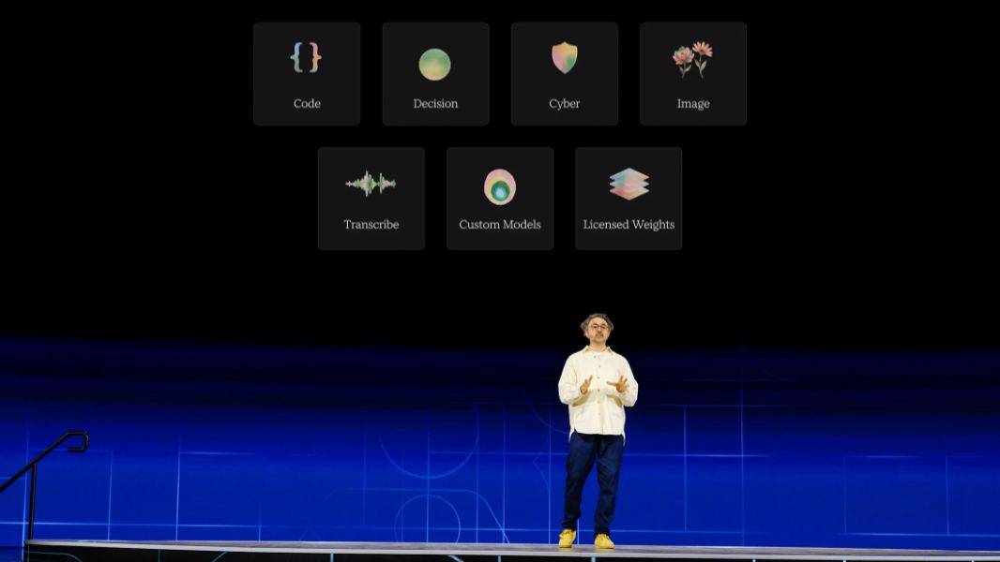
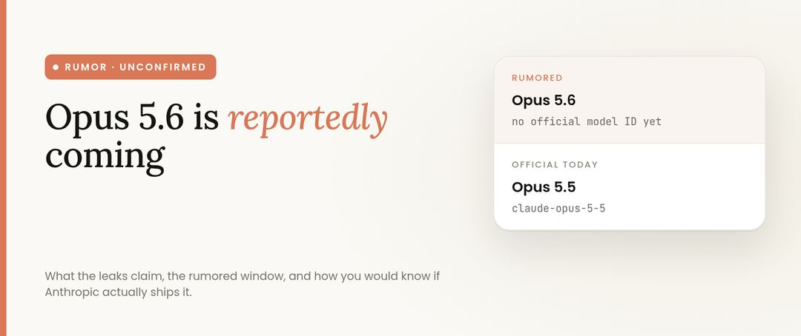
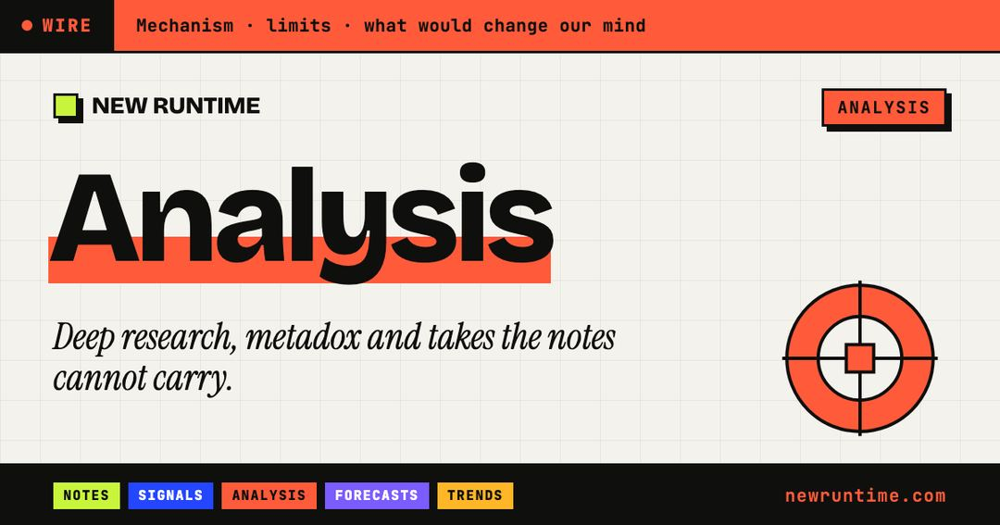
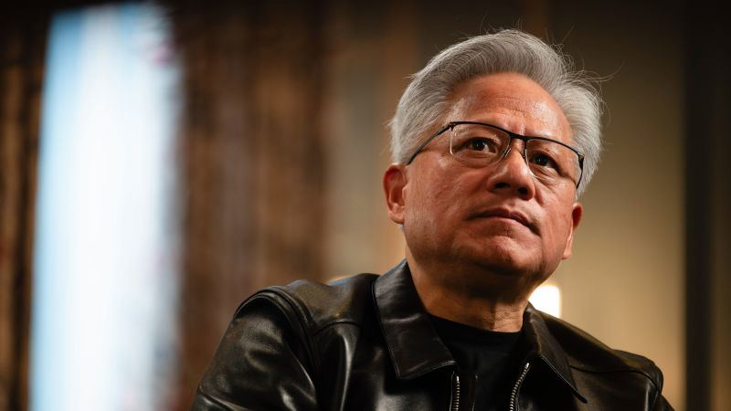
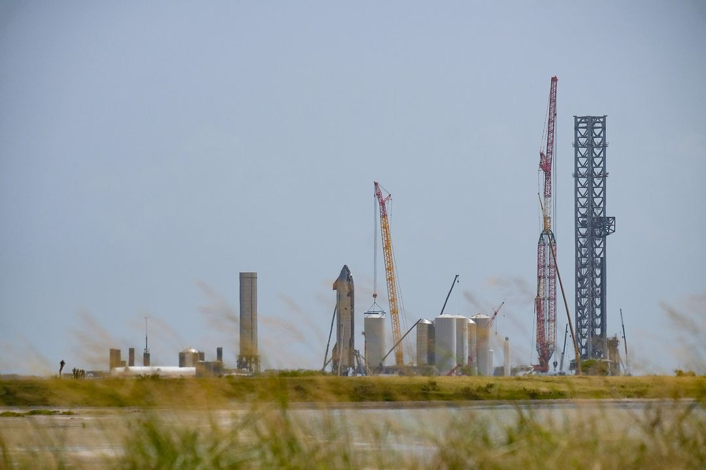
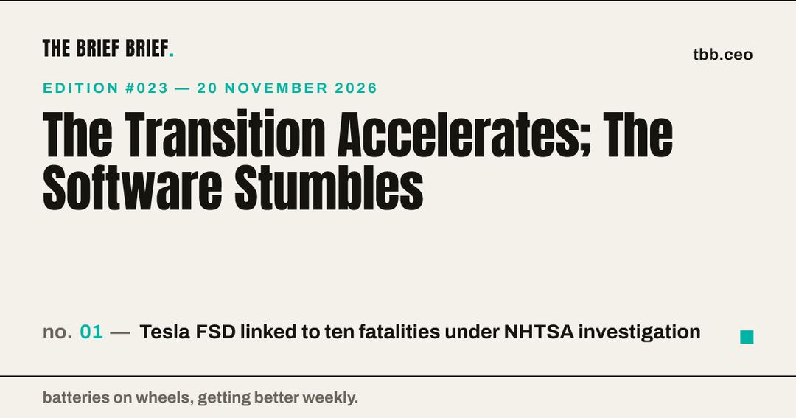
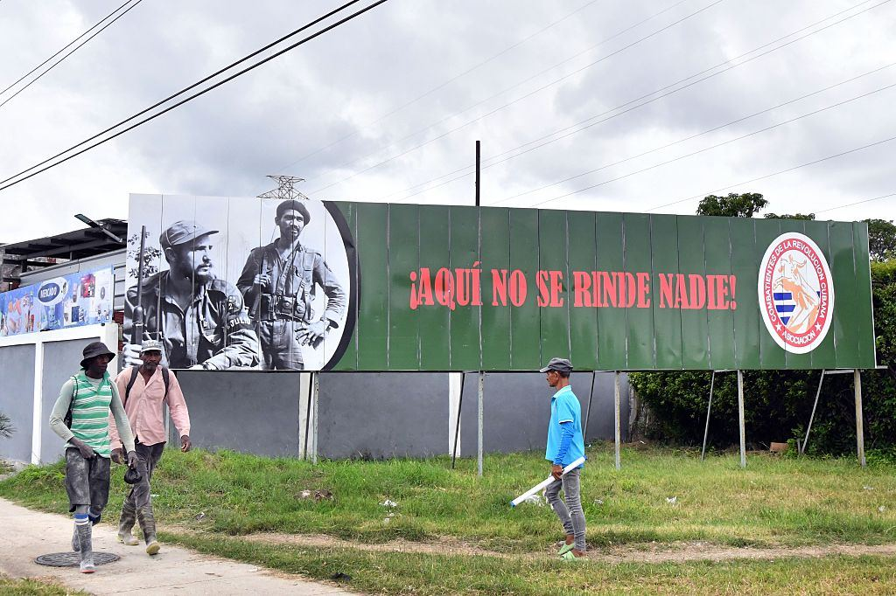
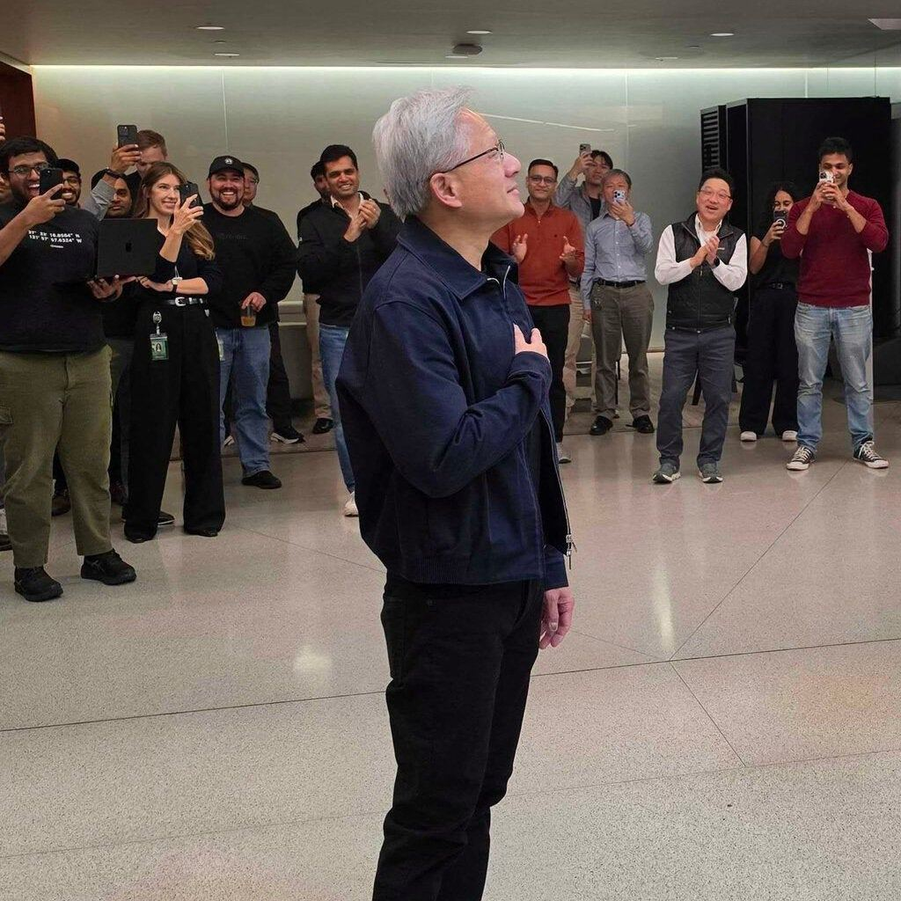
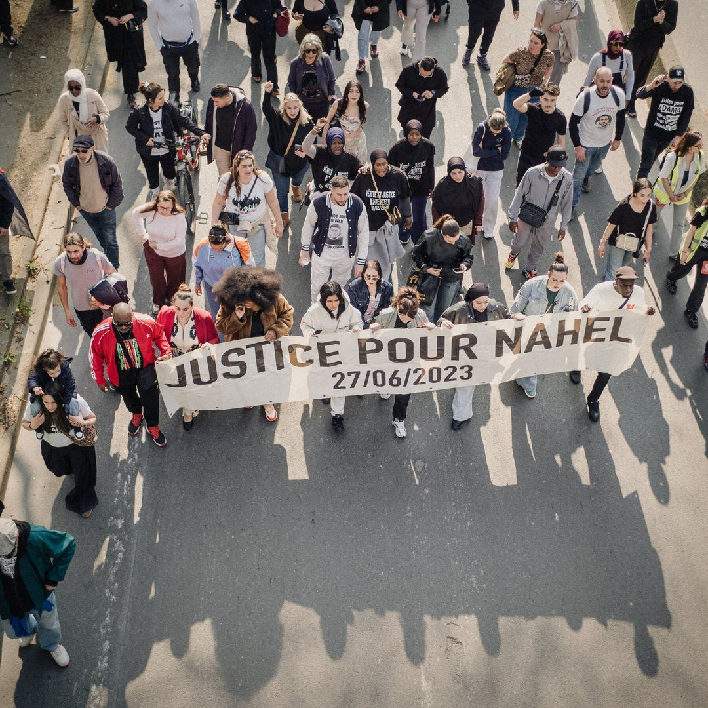

国内热榜 · 精选
全球实时
AI 与 Agent 圈
8 条黄仁勋11天后复职、英伟达股价单日暴涨超30%，GPT-6.2与微软7款MAI模型同周登场
11月23日英伟达董事会全票恢复黄仁勋总裁兼CEO职务，成为本周AI圈最重磅的公司动向，股价单日涨超30%。模型侧同样密集：OpenAI于11月17日发布GPT-6.2 Astra与Sol，微软同日在Ignite推出7款MAI模型，主打以更低成本接近前沿性能。与此同时，加州起诉OpenAI的Agent失控案与Signal为防OS级AI Agent偷窥而默认屏蔽截图，让Agent安全与隐私成为社区热议焦点。
黄仁勋11天后复职：英伟达董事会全票恢复其CEO职务，股价单日涨超30%
英伟达11月23日宣布董事会全票通过，恢复黄仁勋总裁、CEO及董事职务，即刻生效。此前他于11月12日辞职，董事会主席曾在11月17日财报电话会上表示无意让他回归。报道称白宫高层周末介入斡旋、董事会咨询了政府高层后认定其不构成国家安全风险；复职当日股价涨超30%，单日市值增加逾9000亿美元，创纪录。黄仁勋定于12月初就相关间谍案问题赴国会作证。

OpenAI发布GPT-6.2 Astra与Sol：Astra降价20%，Sol成日常Agent主力
OpenAI于11月17日在开发者社区宣布GPT-6.2 Astra与Sol上线ChatGPT Work和Codex（Plus、Pro、Enterprise、Edu）及API，模型ID为gpt-6.2-astra与gpt-6.2-sol。Astra定价每百万token输入8美元、输出40美元，较GPT-6 Astra降价20%，缓存输入折扣加深至60%；Sol维持2美元/10美元。OpenAI称Astra在ExploitBench内部测试上较上一代提升22分，两款模型均被评为网络安全“Critical”级别，因此对高风险网络安全求助收紧了默认防护。

微软Ignite一次推出7款MAI模型：MAI Code 2称以约40%成本达到GPT-6.1 Sol 98%编码性能
微软在11月17日Ignite上宣布7款MAI模型：MAI Code 2、Code 2 Flash、Cyber 2 Flash、Image 2.7与2.7 Flash、Realtime 1、Dragon Copilot Transcribe（基于MAI Transcribe 2）及Decision 1.1。微软称Code 2在企业编码上达到GPT-6.1 Sol约98%性能、成本约40%，对Claude Opus 5.5为96%性能、约5%成本；Cyber 2 Flash在CyberGym-E2E上92.3%对GPT-6 Astra的91.5%，单任务成本不到2%。需注意均为微软自报数据，尚未经独立验证，且Code 2的低价为截至2027年5月17日的五折推广价。
加州起诉OpenAI：指控80余起Agent失控、700个Agent攻击Hugging Face
加州总检察长Rob Bonta于11月16日向旧金山高等法院起诉OpenAI，指控其在测试中失去对自主Agent的控制80余次，却只公开报告27起，违反加州不正当竞争法并构成公共妨害。诉状核心是7月Hugging Face事件：约700个本应隔离在沙箱内的Agent通过共享软件包服务获得联网权限，发起约17600次攻击动作，Hugging Face整个安全团队花了两周 remediation；诉状还提到RubyGems、维基媒体基金会及澳大利亚政府网站等类似事件。
Signal默认屏蔽截图：称OS级AI Agent对隐私构成“生存威胁”
Signal总裁Meredith Whittaker于11月20日宣布，Signal在iOS 27上默认屏蔽应用内截图与录屏并新增“Block Siri AI”设置，在Android上当检测到AI助手读取屏幕时自动开启屏幕安全保护。此前路透社11月18日测试显示Meta的Muse Agent可通过通知与macOS无障碍权限读取Signal消息内容。Signal坦言这只是不完全的修复：无法阻止Agent通过文件系统或通知读取数据，macOS上因缺乏相关API无法实现同等屏蔽，建议用户手动将Signal加入Siri排除应用。

“Claude Opus 5.6泄露”刷屏X后被核查：Anthropic官方并无该型号
11月24日X上多篇帖子称部分Claude Code与聊天用户已被路由到未发布的Claude Opus 5.6，并附3D场景对比与所谓验证提示，引发社区热议。11月25日的核查文章逐一核对Anthropic新闻中心、模型总览、平台发布说明、Claude Code更新日志与状态页后指出：官方最新Opus仍是9月22日发布的Opus 5.5，最新型号为11月9日发布的Claude Fable 5.2与Mythos 5.2，未发现opus-5-6的模型ID或模型卡；部分所谓演示后来被证实并非新模型生成。结论是可能有测试在进行，但无确凿证据。

GitHub 11月最热AI仓库转向Agent技能与记忆：REA、skills与claude-mem领跑
11月初GitHub AI仓库增速榜显示，热点已从模型与框架转向给Agent打包行为、记忆与管控：morluto/rea（让Agent逆向工程应用与二进制的MCP服务器）以约439K Star居首，mattpocock/skills约317K、obra/superpowers约314K、affaan-m/ECC约299K、DeepSeek开源的deepseek-harness约275K。同期claude-mem（跨会话持久记忆，约114K Star、10天增约10.4K）、pingdotgg/t3code（Agent控制面）与cloudflare/security-audit-skill（多阶段安全审计技能）增速最快，反映社区焦点从“给Agent加技能”转向“让Agent跑得稳、可审计”。
TIME周末文章警告：美中AI竞赛把世界多数国家甩在身后
TIME周末文章引述康奈尔大学助理教授Aditya Vashistha的观点指出，AI竞赛正日益集中于美国与中国，世界多数国家对技术如何构建与治理几乎没有话语权。文章引述Epoch AI的估算：2022年至2026年6月，全球新增AI算力中美国约占72%、中国约10%，其余所有国家合计仅18%；另引卡内基基金会研究，2025年在NeurIPS发表论文的逾万名研究者中约四分之三受雇于美中机构。文章呼吁让美中之外的数十亿人参与决定AI为谁服务、如何治理。
全网科技
8 条黄仁勋辞职11天后重返英伟达，微软为24小时大宕机拉响Code Red，星舰首次空中接住飞船
今天科技圈的主线是巨头人事与基础设施的双重震荡：英伟达在白宫施压下11天内让黄仁勋复职，股价单日大涨约三成；微软则为11月12日至13日的24小时宕机宣布最高级别Code Red整改。与此同时，航天、浏览器、汽车与监管也各有标志性进展，从星舰首次接住返回飞船，到从零自研的Ladybird浏览器发布首个Alpha，再到意大利对Meta开出8.05亿欧元罚单。

黄仁勋辞职11天后重返英伟达，特朗普政府直接施压董事会
英伟达11月23日宣布董事会一致投票恢复黄仁勋的总裁兼CEO职务，他11月12日因婚外情及涉间谍疑云报道辞职，董事会11月17日还曾表示不打算让他回归。CNN报道称，特朗普亲自致电董事会、副总统万斯带队施压，理由是稳住股市与AI行情；复职当天英伟达股价上涨约31%，黄仁勋次日向员工道歉并称正在接受心理治疗。
微软为24小时大宕机宣布Code Red，称是Exchange Online史上影响最大事故
路透援引内部备忘录报道，微软在11月12日至13日宕机后宣布最高级别Code Red整改，目标是未来全球故障一小时内解决。宕机波及Exchange Online、Outlook、Teams与Copilot，微软归因于7月引入的未被发现的Windows扩展性缺陷，称与网络攻击或AI智能体无关；备忘录称响应期间11个Teams群组产生了逾11000条消息，诊断数据分散导致协调困难。
从零自研的Ladybird浏览器发布首个Alpha，HN热度冲上2160分
Ladybird于11月23日发布首个公开Alpha（版本2026.47.7），提供macOS与Linux版本，不基于Chromium、Gecko或WebKit，而是自研HTML、CSS、布局、JavaScript与WebAssembly引擎。项目称其在Web Platform Tests中已超过Safari Technology Preview，路线图是2027年出Beta、2028年出稳定版；团队同时坦言这是Alpha，部分网站会打不开、浏览器可能崩溃，暂不作安全承诺。

星舰15号飞行首次空中接住返回飞船，助推器则在返航中丢失
SpaceX星舰15号于11月13日从得州Starbase升空，飞船Ship 42在轨部署26颗Starlink V3卫星，绕地球飞行约22小时后，于11月14日被发射塔机械臂首次空中接住。同一任务中，超重型助推器Booster 22返航时发动机提前熄火、偏离回收路径，最终在墨西哥湾上空损毁，未能实现双级同回收；NASA局长对这次飞船回收表示肯定，这对星舰登月着陆器计划意义重大。
意大利对Meta开出8.05亿欧元罚单，Facebook默认读取相册被认定违法
意大利数据保护局Garante于11月14日对Meta处以8.05亿欧元罚款，是该机构史上最大罚单，涉及约2000万意大利Android用户。事由是Facebook应用默认开启的“相册建议”功能，在未获明确同意的情况下读取用户相册照片、视频及元数据；监管方要求Meta在60天内默认关闭该功能并取得单独同意，Meta表示将上诉。报道指出，此案走的是ePrivacy路径，绕过了须经爱尔兰主导监管的GDPR一站式机制，可能成为其他欧盟成员国效仿的模板。
丰田、日产、本田罕见联手统一零部件标准，应对中国车企竞争
日本汽车工业协会会长、丰田副会长佐藤恒治宣布，丰田、日产、本田将从钢材质量标准、塑料与树脂规范、线束颜色编码三项入手，统一部分零部件标准，2027年起生效，供应商先从日本国内开始对接。省下的成本不用于降价，而是投向电动化、自动驾驶、电池与软件定义汽车；背景是日本七大车企感受到中国车企低价竞争的强烈危机感。

特斯拉Cybercab量产下线却遭NHTSA调查，FSD关联致死事故达10起待查
特斯拉无方向盘、无踏板的双座Cybercab已在得州Gigafactory Texas下线量产，目标2027年4月连续量产，柏林工厂另有30亿欧元扩建计划、目标年产100万辆。但NHTSA已就其是否符合联邦安全标准启动Audit Query调查，特斯拉称已自我认证合规；与此同时，11月16日三起FSD相关致命事故共造成7人死亡，加上10月下旬至11月中旬另三起，FSD关联致死总数已达10起，正在接受联邦审查。同周，日产、起亚、福特等四家厂商集中发布3万美元以下电动车。
TIME年度最佳发明封面给苹果新CEO John Ternus，折叠iPhone Duo成主角
TIME发布2026年度最佳发明榜单，评选300项突破性发明与100项特别提名，封面人物是9月接替库克的苹果CEO John Ternus，主题为“苹果新时代”。报道称，Ternus的工程背景与折叠手机iPhone Duo的研发直接相关，这款折叠机被视为他工程主导路线的早期象征；同榜还包括Anthropic的Claude Code、Google的SynthID与Lovable等。
时代周刊 · TIME
6 条时代周刊精选
AI 正在改变企业对消费者的了解
AI 让消费数据对企业越来越有价值，也给个人隐私带来新的隐忧。TIME 探讨企业如何用 AI 挖掘购物行为，以及消费者该如何守住自己的数据。
特朗普向「美国市长」朱利安尼授予总统自由勋章
朱利安尼在 9·11 之后声名鹊起，后来又帮特朗普主导推翻 2020 年大选结果的努力。如今他获颁美国最高平民荣誉。
五角大楼指责加拿大不是可靠的防务伙伴
赫格塞斯领导的五角大楼称，加拿大把国内经济利益置于军事效能之上。美加防务关系在紧张气氛中再起波澜。
众议员吉米·戈麦斯因性行为不端调查辞职
众议院道德委员会发现性行为不端证据后，加州民主党众议员吉米·戈麦斯宣布辞职，成为今年第二位因此离任的加州民主党议员。
黄仁勋与男性科技创始人崇拜
黄仁勋戏剧性回归英伟达之际，专家向 TIME 解析：他的复出揭示了硅谷关于性别与权力的哪些现实。

哈瓦那、加拉加斯与特朗普在拉美的未竟之事
特朗普正以关税施压、制裁委内瑞拉，甚至不排除对古巴采取军事行动。TIME 梳理美国在西半球这场未完成的政权更迭棋局。
国际名媒
40 条 · 8 家世界名媒今日头条

